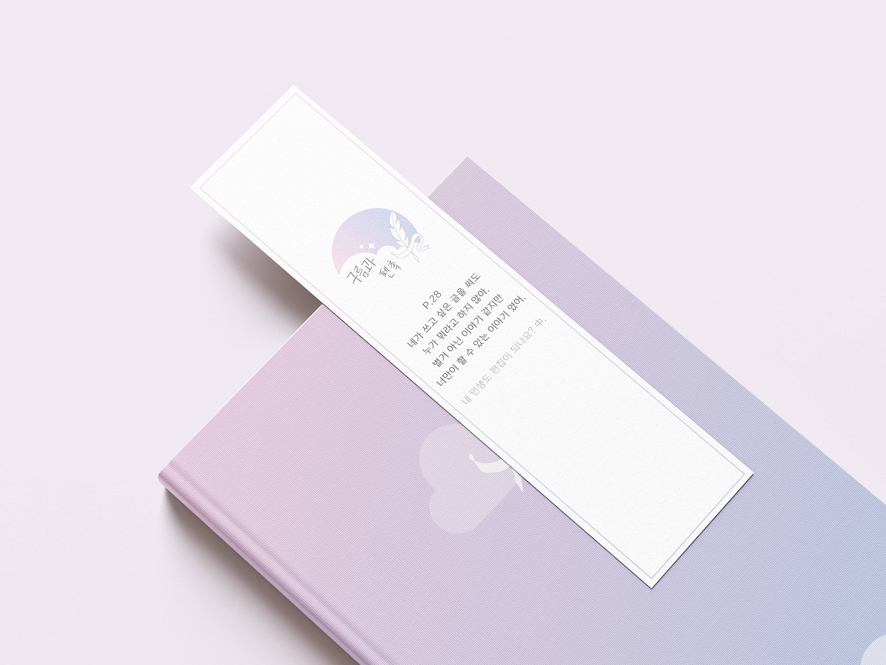
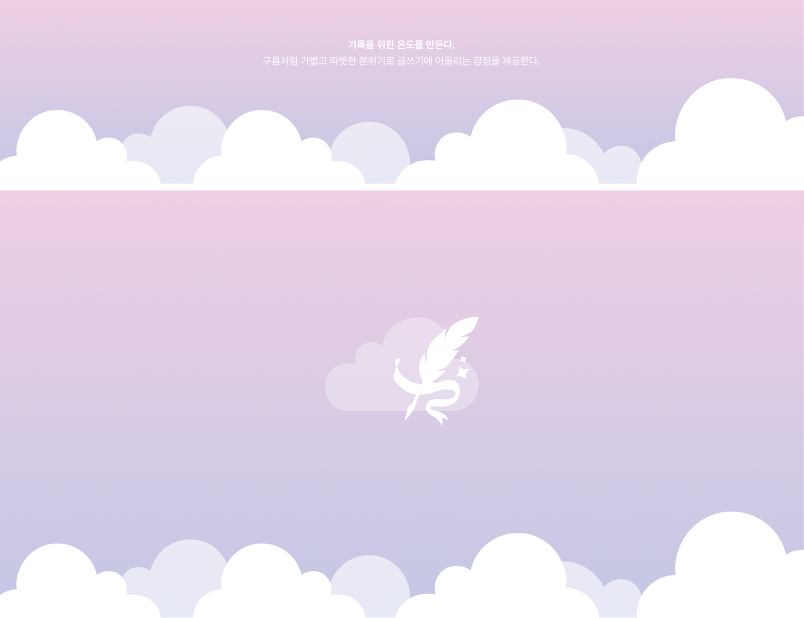
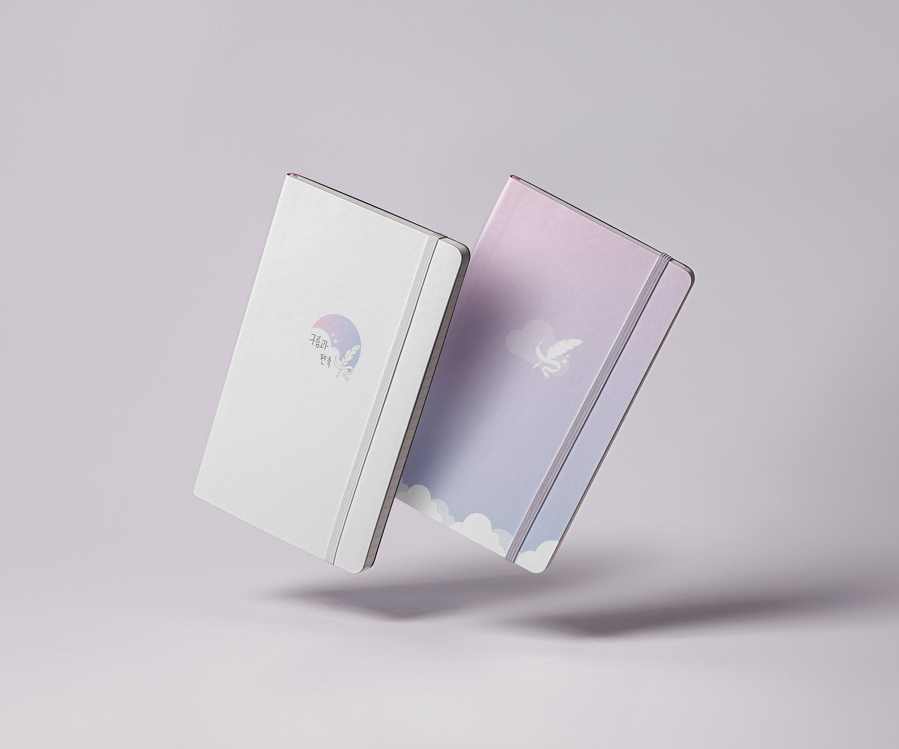
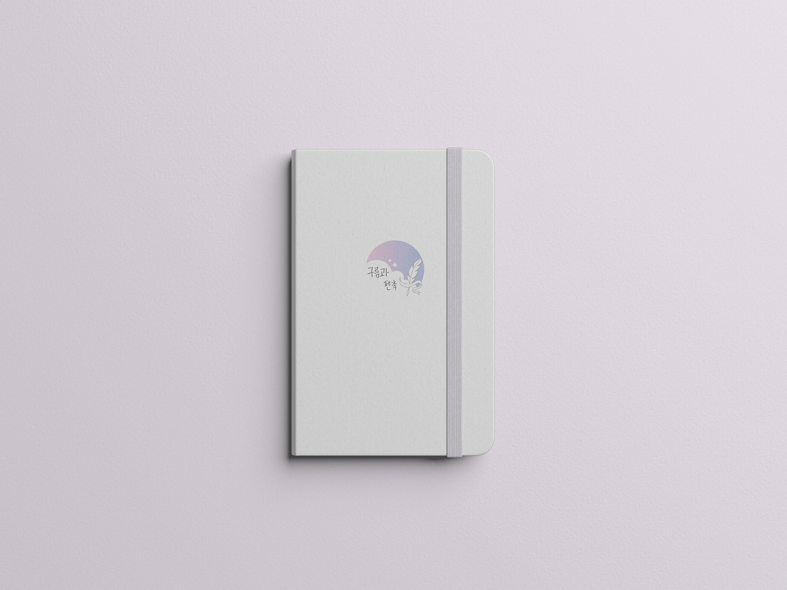
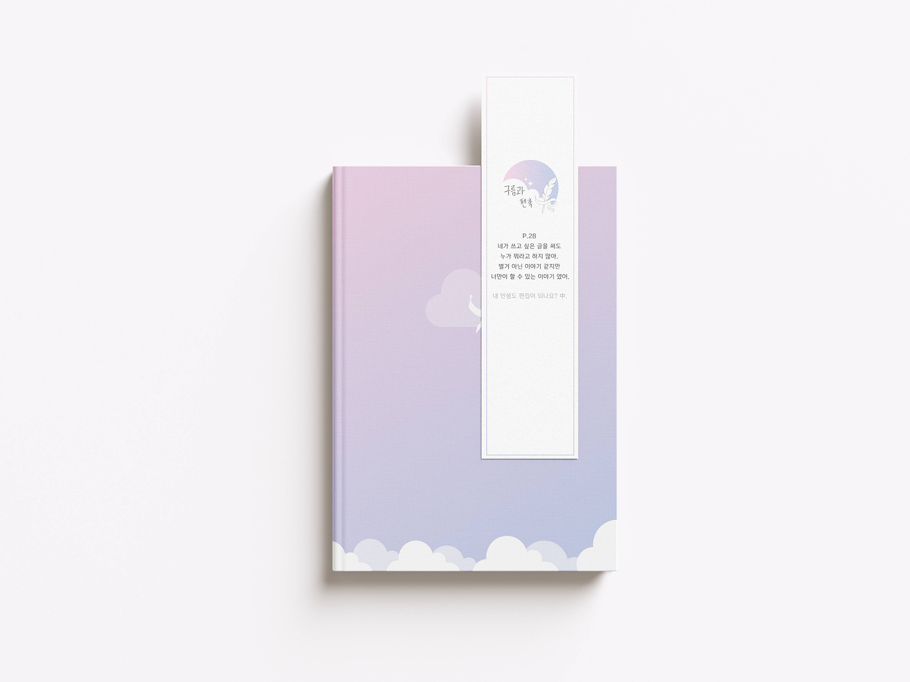
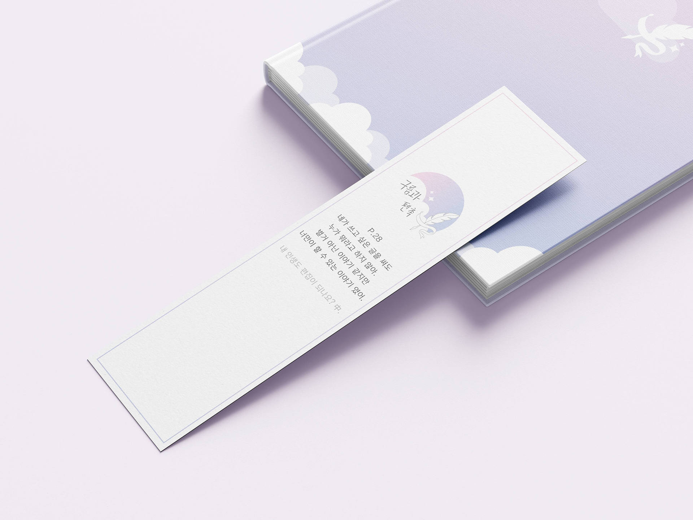

Home
Work
Article
Resume

브랜드 개요
구름과 펜촉은 ‘글을 잘 쓰는 사람’이 아닌, ‘글을 쓰고 싶은 사람’을 위한 공책 브랜드이다.
‘구름’은 무한한 상상력과 자유로움을, ‘펜촉’은 그것을 현실로 옮기는 창작의 행위를 의미한다.
글쓰기는 잘 쓰는 것이 아니라 ‘나의 언어로 표현하는 것’ 이다.

브랜드 미션
“별거 아닌 글이어도, 나만의 글을 쓰자.”
구름과펜촉은 모든 이가 자기만의 문장을 발견하도록 돕는
누구나 자신만의 속도로 써 내려갈 수 있도록 돕는 공책 브랜드이다.


구름과 펜촉은 ‘쓰는 사람’을 위한 브랜드가 아니라, ‘쓰고 싶은 마음’을 만들어내는 브랜드로 존재한다.

